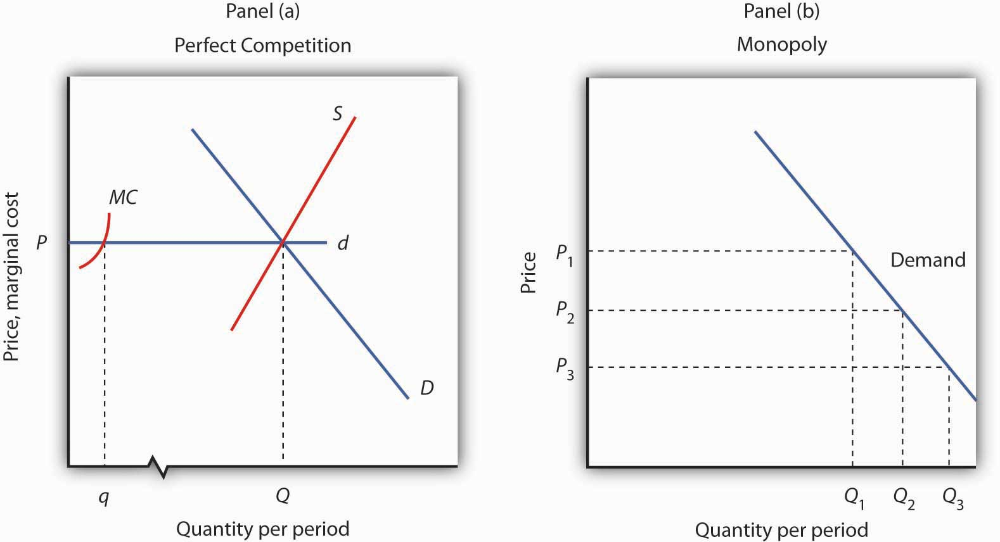
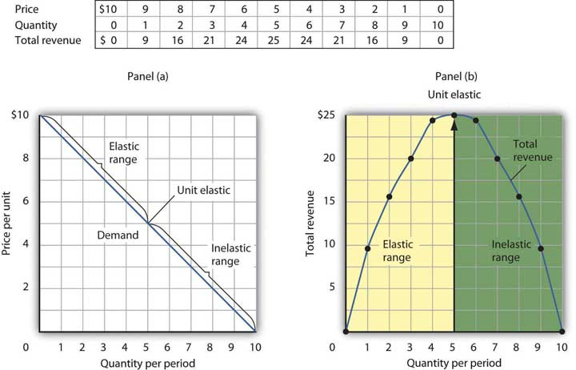
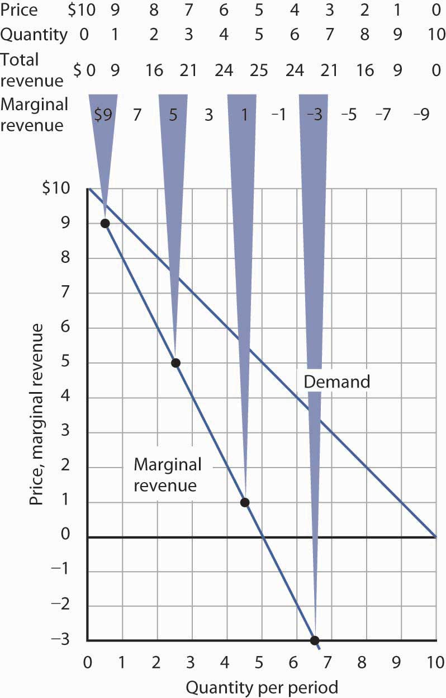
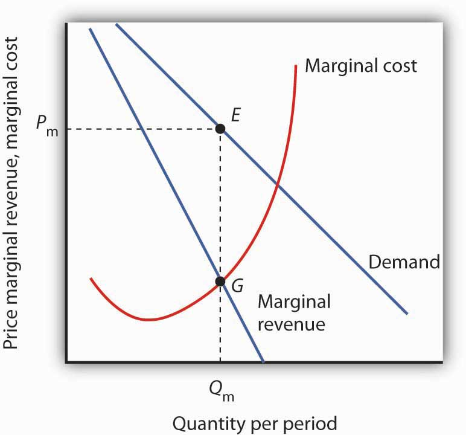
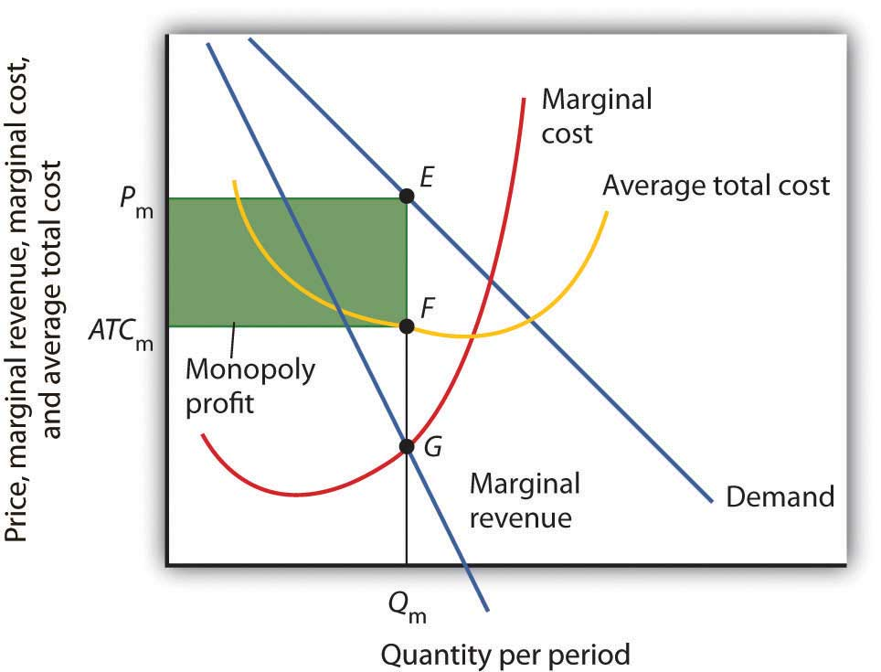

Analyzing choices is a more complex challenge for a monopoly firm than for a perfectly competitive firm. After all, a competitive firm takes the market price as given and determines its profit-maximizing output. Because a monopoly has its market all to itself, it can determine not only its output but its price as well. What kinds of price and output choices will such a firm make?
We will answer that question in the context of the marginal decision rule: a firm will produce additional units of a good until marginal revenue equals marginal cost. To apply that rule to a monopoly firm, we must first investigate the special relationship between demand and marginal revenue for a monopoly.
Because a monopoly firm has its market all to itself, it faces the market demand curve. Figure 10.2 "Perfect Competition Versus Monopoly" compares the demand situations faced by a monopoly and a perfectly competitive firm. In Panel (a), the equilibrium price for a perfectly competitive firm is determined by the intersection of the demand and supply curves. The market supply curve is found simply by summing the supply curves of individual firms. Those, in turn, consist of the portions of marginal cost curves that lie above the average variable cost curves. The marginal cost curve, MC, for a single firm is illustrated. Notice the break in the horizontal axis indicating that the quantity produced by a single firm is a trivially small fraction of the whole. In the perfectly competitive model, one firm has nothing to do with the determination of the market price. Each firm in a perfectly competitive industry faces a horizontal demand curve defined by the market price.
Figure 10.2 Perfect Competition Versus Monopoly
Panel (a) shows the determination of equilibrium price and output in a perfectly competitive market. A typical firm with marginal cost curve MC is a price taker, choosing to produce quantity q at the equilibrium price P. In Panel (b) a monopoly faces a downward-sloping market demand curve. As a profit maximizer, it determines its profit-maximizing output. Once it determines that quantity, however, the price at which it can sell that output is found from the demand curve. The monopoly firm can sell additional units only by lowering price. The perfectly competitive firm, by contrast, can sell any quantity it wants at the market price.
Contrast the situation shown in Panel (a) with the one faced by the monopoly firm in Panel (b). Because it is the only supplier in the industry, the monopolist faces the downward-sloping market demand curve alone. It may choose to produce any quantity. But, unlike the perfectly competitive firm, which can sell all it wants at the going market price, a monopolist can sell a greater quantity only by cutting its price.
Suppose, for example, that a monopoly firm can sell quantity Q1 units at a price P1 in Panel (b). If it wants to increase its output to Q2 units—and sell that quantity—it must reduce its price to P2. To sell quantity Q3 it would have to reduce the price to P3. The monopoly firm may choose its price and output, but it is restricted to a combination of price and output that lies on the demand curve. It could not, for example, charge price P1 and sell quantity Q3. To be a price setter, a firm must face a downward-sloping demand curve.
A firm’s elasticity of demand with respect to price has important implications for assessing the impact of a price change on total revenue. Also, the price elasticity of demand can be different at different points on a firm’s demand curve. In this section, we shall see why a monopoly firm will always select a price in the elastic region of its demand curve.
Suppose the demand curve facing a monopoly firm is given by Equation 10.1, where Q is the quantity demanded per unit of time and P is the price per unit:
Equation 10.1
This demand equation implies the demand schedule shown in Figure 10.3 "Demand, Elasticity, and Total Revenue". Total revenue for each quantity equals the quantity times the price at which that quantity is demanded. The monopoly firm’s total revenue curve is given in Panel (b). Because a monopolist must cut the price of every unit in order to increase sales, total revenue does not always increase as output rises. In this case, total revenue reaches a maximum of $25 when 5 units are sold. Beyond 5 units, total revenue begins to decline.
Figure 10.3 Demand, Elasticity, and Total Revenue
Suppose a monopolist faces the downward-sloping demand curve shown in Panel (a). In order to increase the quantity sold, it must cut the price. Total revenue is found by multiplying the price and quantity sold at each price. Total revenue, plotted in Panel (b), is maximized at $25, when the quantity sold is 5 units and the price is $5. At that point on the demand curve, the price elasticity of demand equals −1.
The demand curve in Panel (a) of Figure 10.3 "Demand, Elasticity, and Total Revenue" shows ranges of values of the price elasticity of demand. We have learned that price elasticity varies along a linear demand curve in a special way: Demand is price elastic at points in the upper half of the demand curve and price inelastic in the lower half of the demand curve. If demand is price elastic, a price reduction increases total revenue. To sell an additional unit, a monopoly firm must lower its price. The sale of one more unit will increase revenue because the percentage increase in the quantity demanded exceeds the percentage decrease in the price. The elastic range of the demand curve corresponds to the range over which the total revenue curve is rising in Panel (b) of Figure 10.3 "Demand, Elasticity, and Total Revenue".
If demand is price inelastic, a price reduction reduces total revenue because the percentage increase in the quantity demanded is less than the percentage decrease in the price. Total revenue falls as the firm sells additional units over the inelastic range of the demand curve. The downward-sloping portion of the total revenue curve in Panel (b) corresponds to the inelastic range of the demand curve.
Finally, recall that the midpoint of a linear demand curve is the point at which demand becomes unit price elastic. That point on the total revenue curve in Panel (b) corresponds to the point at which total revenue reaches a maximum.
The relationship among price elasticity, demand, and total revenue has an important implication for the selection of the profit-maximizing price and output: A monopoly firm will never choose a price and output in the inelastic range of the demand curve. Suppose, for example, that the monopoly firm represented in Figure 10.3 "Demand, Elasticity, and Total Revenue" is charging $3 and selling 7 units. Its total revenue is thus $21. Because this combination is in the inelastic portion of the demand curve, the firm could increase its total revenue by raising its price. It could, at the same time, reduce its total cost. Raising price means reducing output; a reduction in output would reduce total cost. If the firm is operating in the inelastic range of its demand curve, then it is not maximizing profits. The firm could earn a higher profit by raising price and reducing output. It will continue to raise its price until it is in the elastic portion of its demand curve. A profit-maximizing monopoly firm will therefore select a price and output combination in the elastic range of its demand curve.
Of course, the firm could choose a point at which demand is unit price elastic. At that point, total revenue is maximized. But the firm seeks to maximize profit, not total revenue. A solution that maximizes total revenue will not maximize profit unless marginal cost is zero.
In the perfectly competitive case, the additional revenue a firm gains from selling an additional unit—its marginal revenue—is equal to the market price. The firm’s demand curve, which is a horizontal line at the market price, is also its marginal revenue curve. But a monopoly firm can sell an additional unit only by lowering the price. That fact complicates the relationship between the monopoly’s demand curve and its marginal revenue.
Suppose the firm in Figure 10.3 "Demand, Elasticity, and Total Revenue" sells 2 units at a price of $8 per unit. Its total revenue is $16. Now it wants to sell a third unit and wants to know the marginal revenue of that unit. To sell 3 units rather than 2, the firm must lower its price to $7 per unit. Total revenue rises to $21. The marginal revenue of the third unit is thus $5. But the price at which the firm sells 3 units is $7. Marginal revenue is less than price.
To see why the marginal revenue of the third unit is less than its price, we need to examine more carefully how the sale of that unit affects the firm’s revenues. The firm brings in $7 from the sale of the third unit. But selling the third unit required the firm to charge a price of $7 instead of the $8 the firm was charging for 2 units. Now the firm receives less for the first 2 units. The marginal revenue of the third unit is the $7 the firm receives for that unit minus the $1 reduction in revenue for each of the first two units. The marginal revenue of the third unit is thus $5. (In this chapter we assume that the monopoly firm sells all units of output at the same price. In the next chapter, we will look at cases in which firms charge different prices to different customers.)
Marginal revenue is less than price for the monopoly firm. Figure 10.4 "Demand and Marginal Revenue" shows the relationship between demand and marginal revenue, based on the demand curve introduced in Figure 10.3 "Demand, Elasticity, and Total Revenue". As always, we follow the convention of plotting marginal values at the midpoints of the intervals.
Figure 10.4 Demand and Marginal Revenue
The marginal revenue curve for the monopoly firm lies below its demand curve. It shows the additional revenue gained from selling an additional unit. Notice that, as always, marginal values are plotted at the midpoints of the respective intervals.
When the demand curve is linear, as in Figure 10.4 "Demand and Marginal Revenue", the marginal revenue curve can be placed according to the following rules: the marginal revenue curve is always below the demand curve and the marginal revenue curve will bisect any horizontal line drawn between the vertical axis and the demand curve. To put it another way, the marginal revenue curve will be twice as steep as the demand curve. The demand curve in Figure 10.4 "Demand and Marginal Revenue" is given by the equation , which can be written . The marginal revenue curve is given by , which is twice as steep as the demand curve.
The marginal revenue and demand curves in Figure 10.4 "Demand and Marginal Revenue" follow these rules. The marginal revenue curve lies below the demand curve, and it bisects any horizontal line drawn from the vertical axis to the demand curve. At a price of $6, for example, the quantity demanded is 4. The marginal revenue curve passes through 2 units at this price. At a price of 0, the quantity demanded is 10; the marginal revenue curve passes through 5 units at this point.
Just as there is a relationship between the firm’s demand curve and the price elasticity of demand, there is a relationship between its marginal revenue curve and elasticity. Where marginal revenue is positive, demand is price elastic. Where marginal revenue is negative, demand is price inelastic. Where marginal revenue is zero, demand is unit price elastic.
| When marginal revenue is … | then demand is … |
|---|---|
| positive, | price elastic. |
| negative, | price inelastic. |
| zero, | unit price elastic. |
A firm would not produce an additional unit of output with negative marginal revenue. And, assuming that the production of an additional unit has some cost, a firm would not produce the extra unit if it has zero marginal revenue. Because a monopoly firm will generally operate where marginal revenue is positive, we see once again that it will operate in the elastic range of its demand curve.
Profit-maximizing behavior is always based on the marginal decision rule: Additional units of a good should be produced as long as the marginal revenue of an additional unit exceeds the marginal cost. The maximizing solution occurs where marginal revenue equals marginal cost. As always, firms seek to maximize economic profit, and costs are measured in the economic sense of opportunity cost.
Figure 10.5 "The Monopoly Solution" shows a demand curve and an associated marginal revenue curve facing a monopoly firm. The marginal cost curve is like those we derived earlier; it falls over the range of output in which the firm experiences increasing marginal returns, then rises as the firm experiences diminishing marginal returns.
Figure 10.5 The Monopoly Solution
The monopoly firm maximizes profit by producing an output Qm at point G, where the marginal revenue and marginal cost curves intersect. It sells this output at price Pm.
To determine the profit-maximizing output, we note the quantity at which the firm’s marginal revenue and marginal cost curves intersect (Qm in Figure 10.5 "The Monopoly Solution"). We read up from Qm to the demand curve to find the price Pm at which the firm can sell Qm units per period. The profit-maximizing price and output are given by point E on the demand curve.
Thus we can determine a monopoly firm’s profit-maximizing price and output by following three steps:
Figure 10.6 Computing Monopoly Profit
A monopoly firm’s profit per unit is the difference between price and average total cost. Total profit equals profit per unit times the quantity produced. Total profit is given by the area of the shaded rectangle ATCmPmEF.
Once we have determined the monopoly firm’s price and output, we can determine its economic profit by adding the firm’s average total cost curve to the graph showing demand, marginal revenue, and marginal cost, as shown in Figure 10.6 "Computing Monopoly Profit". The average total cost (ATC) at an output of Qm units is ATCm. The firm’s profit per unit is thus Pm - ATCm. Total profit is found by multiplying the firm’s output, Qm, by profit per unit, so total profit equals Qm(Pm - ATCm)—the area of the shaded rectangle in Figure 10.6 "Computing Monopoly Profit".
Dispelling Myths About Monopoly
Three common misconceptions about monopoly are:
As Figure 10.5 "The Monopoly Solution" shows, once the monopoly firm decides on the number of units of output that will maximize profit, the price at which it can sell that many units is found by “reading off” the demand curve the price associated with that many units. If it tries to sell Qm units of output for more than Pm, some of its output will go unsold. The monopoly firm can set its price, but is restricted to price and output combinations that lie on its demand curve. It cannot just “charge whatever it wants.” And if it charges “all the market will bear,” it will sell either 0 or, at most, 1 unit of output.
Neither is the monopoly firm guaranteed a profit. Consider Figure 10.6 "Computing Monopoly Profit". Suppose the average total cost curve, instead of lying below the demand curve for some output levels as shown, were instead everywhere above the demand curve. In that case, the monopoly will incur losses no matter what price it chooses, since average total cost will always be greater than any price it might charge. As is the case for perfect competition, the monopoly firm can keep producing in the short run so long as price exceeds average variable cost. In the long run, it will stay in business only if it can cover all of its costs.
The Troll Road Company is considering building a toll road. It estimates that its linear demand curve is as shown below. Assume that the fixed cost of the road is $0.5 million per year. Maintenance costs, which are the only other costs of the road, are also given in the table.
| Tolls per trip | $1.00 | 0.90 | 0.80 | 0.70 | 0.60 | 0.50 |
| Number of trips per year (in millions) | 1 | 2 | 3 | 4 | 5 | 6 |
| Maintenance cost per year (in millions) | $0.7 | 1.2 | 1.8 | 2.9 | 4.2 | 6.0 |
Love of the game? Love of the city? Are those the factors that influence owners of professional sports teams in setting admissions prices? Four economists at the University of Vancouver have what they think is the answer for one group of teams: professional hockey teams set admission prices at levels that maximize their profits. They regard hockey teams as monopoly firms and use the monopoly model to examine the team’s behavior.
The economists, Donald G. Ferguson, Kenneth G. Stewart, John Colin H. Jones, and Andre Le Dressay, used data from three seasons to estimate demand and marginal revenue curves facing each team in the National Hockey League. They found that demand for a team’s tickets is affected by population and income in the team’s home city, the team’s standing in the National Hockey League, and the number of superstars on the team.
Because a sports team’s costs do not vary significantly with the number of fans who attend a given game, the economists assumed that marginal cost is zero. The profit-maximizing number of seats sold per game is thus the quantity at which marginal revenue is zero, provided a team’s stadium is large enough to hold that quantity of fans. This unconstrained quantity is labeled Qu, with a corresponding price Pu in the graph.
Stadium size and the demand curve facing a team might prevent the team from selling the profit-maximizing quantity of tickets. If its stadium holds only Qc fans, for example, the team will sell that many tickets at price Pc; its marginal revenue is positive at that quantity. Economic theory thus predicts that the marginal revenue for teams that consistently sell out their games will be positive, and the marginal revenue for other teams will be zero.
The economists’ statistical results were consistent with the theory. They found that teams that do not typically sell out their games operate at a quantity at which marginal revenue is about zero and that teams with sellouts have positive marginal revenue. “It’s clear that these teams are very sophisticated in their use of pricing to maximize profits,” Mr. Ferguson said.
Not all studies of sporting event pricing have confirmed this conclusion. While a study of major league baseball ticket pricing by Leo Kahane and Stephen Shmanske and one of baseball spring training game tickets by Michael Donihue, David Findlay, and Peter Newberry suggested that tickets are priced where demand is unit elastic, some other studies of ticket pricing of sporting events have found that tickets are priced in the inelastic region of the demand curve. On its face, this would mean that team owners were not maximizing profits. Why would team owners do this? Are they really charging too little? To fans, it certainly may not seem so!
While some have argued that owners want to please fans by selling tickets for less than the profit-maximizing price, others argue they do so for possible political considerations, for example, keeping prices below the profit-maximizing level could help when they are asking for subsidies for building new stadiums. In line with the notion that team owners do behave like other profit-maximizing firms, another line of research, for example, that proposed by Anthony Krautmann and David Berri, has been to recognize that owners also get revenue from selling concessions so that getting more fans at the game may boost revenue from other sources.
Sources: Michael R. Donihue, David W. Findlay, and Peter W. Newberry, “An Analysis of Attendance at Major League Baseball Spring Games,” Journal of Sports Economics 8:1 (February 2007): 39–61; Donald G. Ferguson et al., “The Pricing of Sports Events: Do Teams Maximize Profit?” Journal of Industrial Economics 39:3 (March 1991): 297–310 and personal interview; Leo Kahane and Stephen Shmanske, “Team Roster Turnover and Attendance in Major League Baseball,” Applied Economics 29 (1997): 425–431; and Anthony C. Krautmann and David J. Berri, “Can We Find It at the Concessions?” Journal of Sports Economics 8:2 (April 2007): 183–191.
Maintenance costs constitute the variable costs associated with building the road. In order to answer the first four parts of the question, you will need to compute total revenue, marginal revenue, and marginal cost, as shown at right: